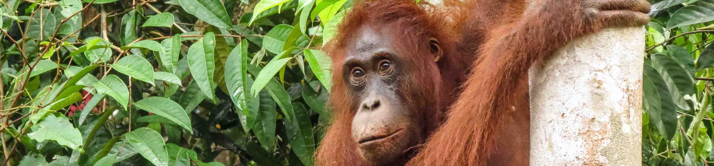
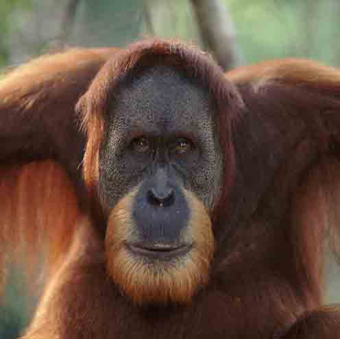
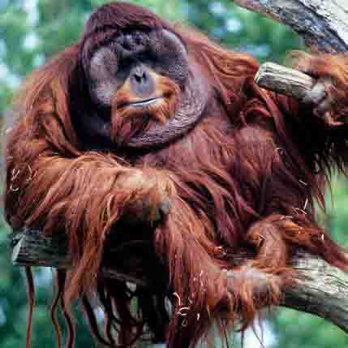
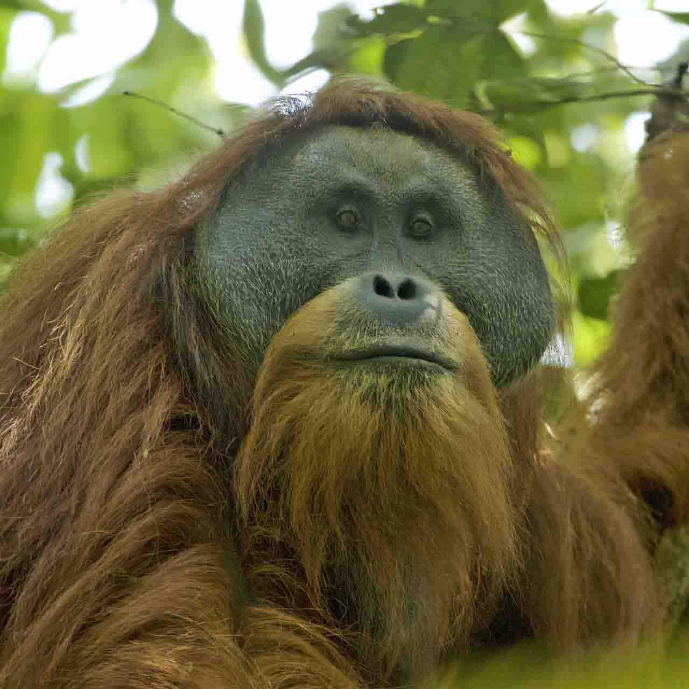

Orangutan

Species
There are three species of Orangutan, these are:

Sumatran Orangutans (scientifically known as Pongo abelii) are almost strictly tree dwelling creatures, females virtually never travel on the ground and males rarely do so.

Bornean Orangutans (scientifically known as Pongo pygmaeus) are the least endangered of the three species, with only roughly 104,700 left as the population has decreased by over 50% in the past 60 years.

Tapanuli Orangutans (scientifically known as Pongo tapanuliensis) are the most recently founded species of orangutan, the first one being discovered in 2013, they were then described as their own species in 2017 after extensive scientific research. There are currently only around 800 in the wild.
Habitat
Orangutans are usually found in the rainforests of the Southeast Asian Islands Borneo and Sumatra.